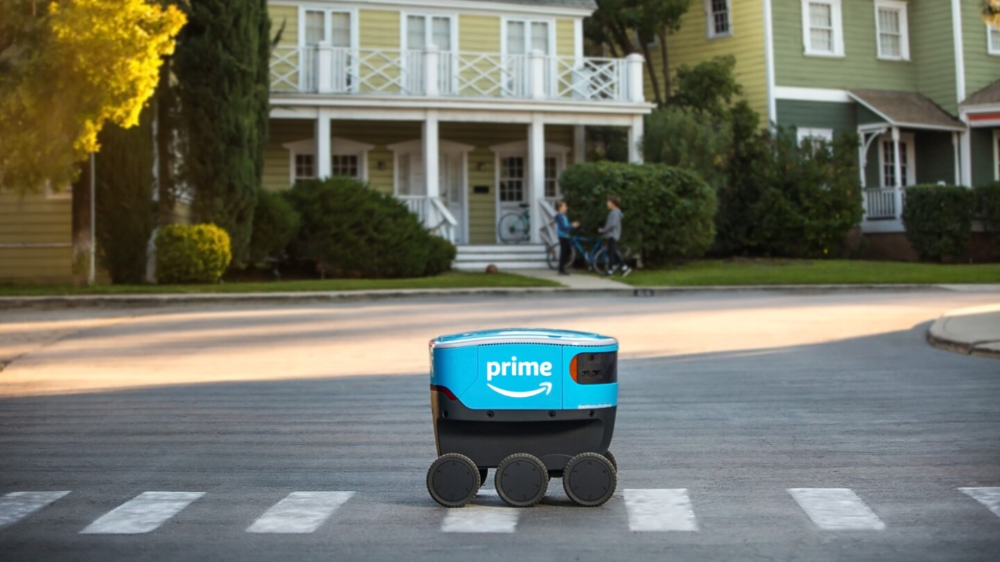
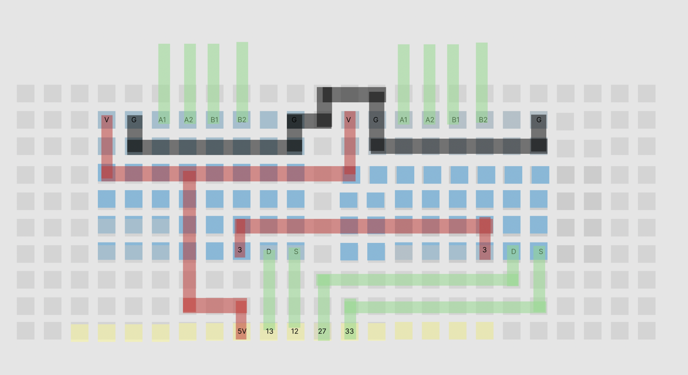
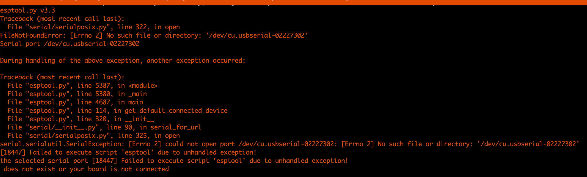
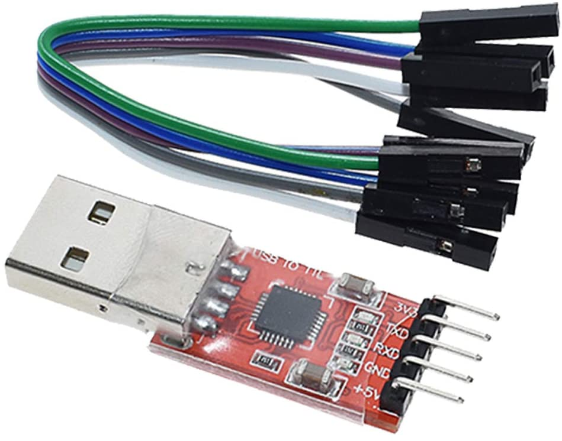
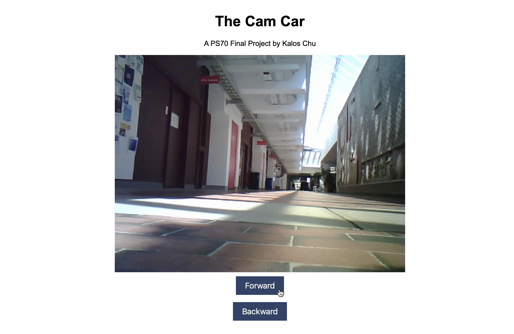

my original plans for a final project were to make some sort of knock-activated door-opening mechanism. given, however,
that i had pretty much built out the entire design already in week four, I decided to use
the final project as an opportunity to try something else
to that end, i decided to build a car that could be piloted remotely and that had a camera. my original inspiration came from
the automated delivery drones that Amazon is rolling out in some cities

i thought it would be interesting to build a car that connected to a wifi network and, as such, that i could pilot from anywhere
that there is wifi. especially at harvard, where essentially the entire campus is connected by a shared wifi network, this
could have the potential for serious range — i.e. i could drive it to the science center from my dorm room in Dunster House.
# building the car
# ---------------------------------
the design design of the car was meant to be very simple, with just enough room on the body to fit the stepper motor and the power source. i began with the block of wood, which i
drilled holes in slightly bigger than the diameter of the eventual axle. i then secured the axle and wheels with screws reinforced by hot glue.
i then secured the stepper motor to the base with a wooden mount, using a shim to make sure the fit was snug. i then glued the breadboard to the front of the
car so that the cam would have a good view.
because the portable battery power source was so round, i created a little diagonal mount for it on the back of the car for easy access/so that it would't fall off.
# soldering a circuitboard
# ---------------------------------
i had originally intended to solder a protoboard instead of using a breadboard to minimize the amount of dangling wires/possibility for
something to disconnect
i began by designing a circuitboard visually. because i come from a graphic design background, i used figma to make my design
because the biggest protoboard available was 24x10 pins, my goal in designing the circuit was to make it actually fit on the board without
having any overlapping circuits, as well as to minimize the amount of soldering i would have to do. here was my final design:

when i when to actually solder everything together, however, i realized that my soldering skills weren't up to the task, and i accidentally
soldered together two circuits that weren't supposed to be connected. because there wasn't another large enough protoboard available, and because
i didn't have enough time to go through the process again, i decided to abandon the soldered PBC board in favor of the breadboard.
here was as far as i got:
# programming the microcontroller
# ---------------------------------
in week eleven, i used ESP-NOW to allow one microcontroller to command the motor attached to another one. this method of
data transfer had a bit of a lag, and because i would be sending large packets of data (in the form of video) for this project,
i decided to opt for creating a LAN-based server instead.
i adapted the code from this tutorial for my microcontroller, because mine would be controlling a stepper motor instead. i used the AccelStepper library commands
to streamline the process of controlling the stepper motor speed.
here was the final version of the code that i used:
i had originally planned to make the code more complex (e.g. add left/right turning, make the car accelerate faster the longer the "forward" button was pressed, etc.), but here is
where i ran into my biggest problem: uploading code to the ESP32-CAM microcontroller.
for approximately eight hours, i was unable to upload any code to the ESP32-CAM. the biggest problem was my computer being unable to detect
the microcontroller that was plugged in. i tried a variety of different fixes: swapping out the dongles, wires, ESP32-CAM, and FTDI programmers — none of which worked.
i then assumed there was some sort of issue with my computer, but it also wouldn't work on anyone else's computer either.

the culprit ended up being the FTDI programmer.

after a while of usage, it would get very hot very quickly, and then stop working. the reason that i didn't discover that
was the case earlier was because many of the replacement FTDI programmers i used seemed to already be broken. it's unclear why this happens (my working hypothesis
is that the motor driver (if the potentiometer is turned too high) demands too much amperage, which overheats the FTDI programmer).
after the code was finally uploaded, this is what the server looked like:

# final product and reflections
# ---------------------------------
here is a video of the final product in action:
it is able to move forward and backward, the video quality is fairly high, and the range is also quite high. i only tested it using the
router in the makerspace, but i could theoretically connect it to the harvard university wifi by registering the MAC address, which would increase
the range to essentially all of campus.
there were many features i wish i had implemented, but was unable to in part because of the delays caused by being unable to upload code to the cam, but also in part
because of my own failure to allocate my time effectively and begin working on the project earlier.
the first additional feature would, of course, be adding a second stepper motor to control another wheel independently, thus allowing it to turn left/right. my original design
would've used two front wheels (each controlled by a separate stepper motor), and one single freely rotating back wheel.
if i had a lot more time, i think it would be interesting to integrate some object-tracking into the video, and have the car, for example, maintain
a certain distance behind a moving object it would be tracking. this, i think, would increase the functionality far beyond its current form.
there are, of course, also cosmetic/hardware changes i would've liked to make if i had more time: soldering the circuitboard, creating a less exposed chassis,
securing the tires more cleanly, etc.
perhaps the biggest lesson from this is the realization that there will inevitably be unforeseen delays in the process of creating a final project, and that it's impossible to
realize an ideal vision without starting early and allocating time effectively.
and on a final note, i would like to thank nathan, ibrahim, all of the TFs, and — most of all — all of my peers in the class for making this
such a wonderful semester. i took this class, in large part, to fulfill a divisional distribution requirement, but i came out of it with not only a basic
working knowledge of so many practical skills, but a new openness to making — to crafting and building and creating my own fixes to problems
i encounter on a daily basis. so thank you so much for this wonderful gift.